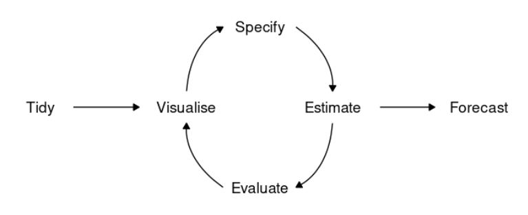
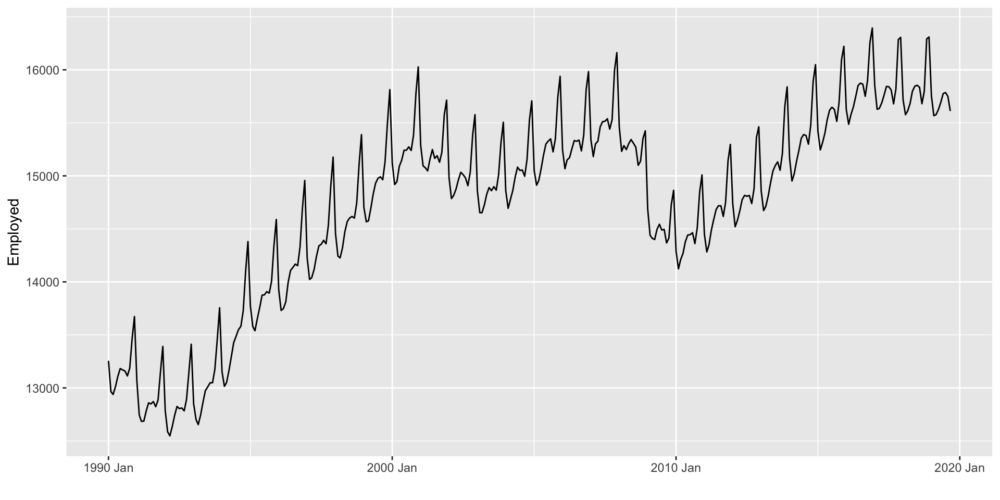
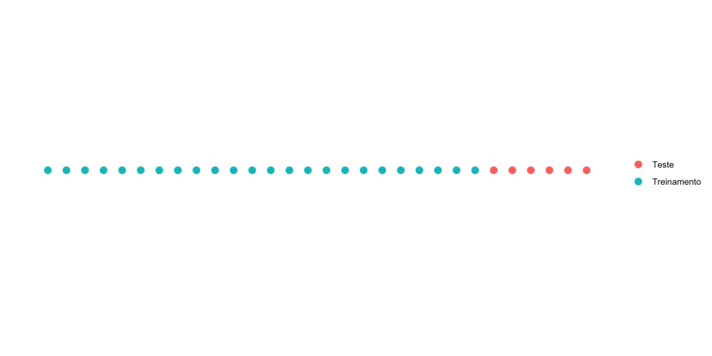
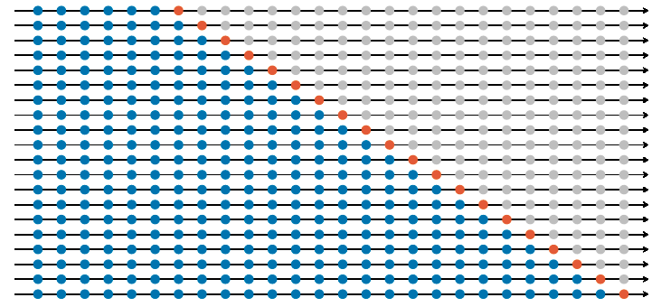
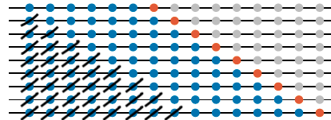
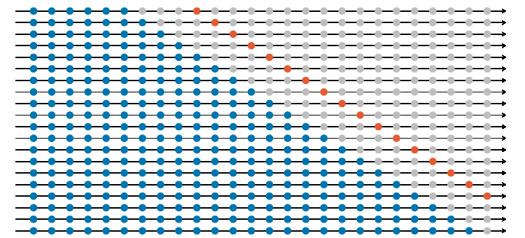

Modelos básicos + Avaliação de modelos
ME607 - Séries Temporais
Prof. Carlos Trucíos
ctrucios@unicamp.br
ctrucios@unicamp.br
Instituto de Matemática, Estatística e Computação Científica (IMECC),
Universidade Estadual de Campinas (UNICAMP).
Introdução
Introdução
- Existem vários modelos de séries temporias para fazer previsão, escolher o “melhor” modelo é fundamental para obtermos melhores previsões.
- Alguns modelos são considerados básicos pela sua simplicidade e ingenuidade. Alguns destes modelos serão vistos na aula de hoje.
- Como sabermos se o modelo utilizado é bom?
- Na aula de hoje também aprenderemos como avaliar modelos de séries temporais.
Fluxo de modelagem
Fluxo de modelagem
Todo projeto relacionado com séries temporais deve passar pelo seguinte fluxo:
Fonte: Livro ‘Forecasting: Principles and Practice’
- Tidy: preparar os dados para podermos utilizar os diversos modelos implementados.
- Visualise: EDA.
- Especificar, estimar e avaliar o modelo (Modelagem).
- Fazer previsões (Forecast).
Fluxo de modelagem
Tidy: Preparar os dados
- Importar os dados.
- Identificar a variável de interesse e a variável tempo.
- Identificar valores faltantes e/ou extremos (como lidar?).
- Filtrar e transformar segundo a necessidade.
Visualização de dados - EDA
- Primeiro passo antes de analisar os dados.
- Embora gráficos sejam muito importantes, podemos/devemos complementar os gráficos com tabelas reportando estatísticas resumo.
- Nos ajuda a entender a série e posteriormente escolhermos um modelo apropriado para fazer previsão.
Fluxo de modelagem
Especificar, Estimar, Avaliar (Modelagem)
- Especificar: existem vários métodos que podem ser utilizados para fazer previsão de séries temporais. Nós precisamos especificar qual modelo utilizaremos. Nossa escolha será influenciada pelo conhecimento obtido na EDA:
- Estimar: uma vez definido (especificado) o modelo, precisamos ajustar/treinar/estimar o modelo (análogo a obter \(\hat{\beta}\) no modelo de regressão).
- Avaliar: antes de utilizar o modelo para fazer previsão precisamos avaliar o desempenho do modelo (ele capturou a dinâmica dos dados? como foi o desempenho das previsões?).
Modelos básicos
Modelos básicos
Os modelos básicos são bastante simples, para explicar eles, bem como para ilustrar como especificar e estimar o modelo no R, utilizaremos alguns métodos simples.
Code
Rows: 58
Columns: 2
$ Year <int> 1960, 1961, 1962, 1963, 1964, 1965, 1966, 1967, 1968, 1969, 197…
$ GDP_pc <dbl> 210.0275, 204.9293, 260.2253, 291.9506, 261.3311, 260.9647, 315…\[\hat{y}_{T+h|T} = \dfrac{\sum_{i=1}^T y_i}{T}\]
\[\text{Naive } \equiv \text{ Ingênuo}\]
Todas as previões são iguais à última observação, \(\hat{y}_{T+h|T} = y_T\).
As previões são iguais à última observação do mesmo período sazonal.
Para ilustrar o método, vamos supor que nossos dados possuem um período sazonal \(m = 10\), ou seja que de 10 em 10 anos existe um padrão sazonal.
O drift (quantidade de mudança ao longo do tempo) é calculado como a mudança média nos dados históricos, \(\hat{y}_{T+h|T} = y_T + \dfrac{h}{T-1} \displaystyle \sum_{t=2}^T (y_t-y_{t-1}) = y_T + h \Big( \dfrac{y_T - y_1}{T-1} \Big)\).
Modelos básicos
Repare na sintaxe da forma model(nome_qqr = nome_do_modelo(y ~ x))
Modelos básicos
Note que “saber o código” não isenta de sabermos quando utilizar um modelo. Por exemplo, no slide anterior utilizamos a média para uma série não estacionária. (o que não parece ser uma boda ideia, certo?). Consegue pensar um caso em que utilizar a média não pareça uma ideia tão ruim?
- Modelos básicos são utilizados como benchmarks.
- Modelos mais complexos deveriam ser melhores do que os benchmarks (por quê?).
- Embora os modelos sejam simples e ingênuos, muitas vezes é o melhor que podemos fazer (por quê?).
- Como sabemos se o modelo teve um bom desempenho? Como sabemos qual dos modelos teve o melhor desempenho?
Modelos básicos

- Será que o modelo utilizado capturou as carecterísticas da série ao ponto que, os resíduos são apenas um ruido branco? (diagnóstico do modelo).
- Será que se utilizarmos o mesmo método por vários períodos de tempo teriamos um desempenho melhor do que modelos concorrentes?
- Por quê é importante avaliar o desempenho de um modelo?
Para responder isto, faremos um diagnóstico do modelo e avaliaremos o desempenho fora da amostra
Diagnóstico do modelo
Diagnóstico do modelo
- Previsão (\(\hat{y}_{T+h|T}\)): usamos a informação disponível até o tempo \(T\) para prever as observações fora da amostra (\(T+1, T+3, \ldots, T+h\)).
- Valor estimado (\(\hat{y}_{t|t-1}\)): usamos a informação disponível até o tempo \(t-1\) para “prever” o que acontece no tempo \(t\). Contudo, os parâmetros do modelo são estimados utilizando a informação até o tempo \(T\). Por isso, \(\hat{y}_{t|t-1}\) não é uma previsão.
- Resíduos: é a diferença entre o valor verdadeiro e o valor estimado, \(e_t = y_t - \hat{y}_{t|t-1}\)
- Resíduos de inovação: Se a série for transformada (por exemplo \(y_t^{\ast} = \log(y_t)\)), os resíduos de inovação são \(y_t^{\ast} - \hat{y}_t^{\ast}\). Se a série não for transformada, os resíduos e os resíduos de inovação são iguais.
Através dos resíduos de inovação saberemos se o modelo capturo a dinâmica dos dados.
Diagnóstico do modelo
Assim como o médico é capaz de fazer um diagnóstico do paciente baseando-se nos resultados dos exames médicos. Nós, somos capazes de fazer um diagnóstico do modelo através da análise dos resíduos de inovação.
Em geral, queremos os resíduos de innovação sejam um ruido branco com média zero.
Ruido branco
Um processo \(\{ \epsilon_t \}\) é chamado de ruido branco se é uma sequência de variáveis aleatórias de distribuição fixa com \(\mathbb{E}(\epsilon_t) = 0\), \(\mathbb{V}(\epsilon_t) = \sigma^2\) e \(\gamma(k) = 0 \quad \forall k\).
Diagnóstico do modelo
- Os resíduos de inovação devem ser não correlacionados. Se os resídios de inovação forem correlacionados, significa que o modelo não capturou a dinâmica dos dados e que existem informações nos dados que ainda precisam ser exploradas.
- Para verificar isto, utilizamos a função de autocorrelação dos resíduos de inovação e testes “Portmanteau”.
- Os resíduos de inovação devem ter média zero. Se a média não for zero, significa que as previsões serão viesadas (ou seja, tendemos a subestimar ou superestimar).
- Para verificar isto, podemos fazer um histograma
- Também podemos fazer um gráfico sequência dos resíduos de inovação.
- Padrões não devem ser observados nos resíduos de innovação.
Diagnóstico do modelo
Code
# Importando os dados
uri <- "https://raw.githubusercontent.com/ctruciosm/ctruciosm.github.io/master/datasets/lajeado_rs.csv"
lajeado_rs <- read.csv(uri, sep = ";")
# Passando para um formato de séries temporais
lajeado_rs <- lajeado_rs %>%
mutate(ano_mes = yearmonth(ano_mes)) %>%
select(ano_mes, temp_media) %>%
as_tsibble(index = ano_mes)
glimpse(lajeado_rs)Rows: 79
Columns: 2
$ ano_mes <mth> 2015 Jan, 2015 Feb, 2015 Mar, 2015 Apr, 2015 May, 2015 Jun,…
$ temp_media <dbl> 25.6, 24.8, 24.2, 21.2, 18.5, 16.2, 15.9, 21.0, 17.8, 19.4,…A função gg_tsresiduals() do pacote feasts (que já é carregado quando utilizamos o pacote fpp3) nos ajudará a fazer o diagnóstico do modelo. A função fornece o gráfico de sequência, o gráfico da função de autocorrelação e o histograma dos resíduos de inovação.
Diagnóstico do modelo
Embora o gráfico da função de autocorrelação (também conhecido como correlograma) nos ajude a verificar se os resídios são ou não correlacionados, muitas vezes é dificil verificar isto visualmente.
- Uma forma mais formal de verificar isto é através de testes de hipóteses.
- Testaremos um grupo de autocorrelações em lugar de apenas fazer o teste individualmente (daí o nome portmanteau que em francês significa mala).
- Testamos se as primeiras \(k\) autocorrelações são diferentes do que nós esperamos (esperamos que os resíduais sejam um ruido branco, o que implica que as autocorrelações sejam todas zero).
- Aplicaremos o teste Box-Pierce e o teste Ljung-Box.
Diagnóstico do modelo
\[H_0: \rho_1 = \rho_2 = \cdots = \rho_k = 0.\]
Teste Box-Pierce
\[Q = T \displaystyle \sum_{i=1}^k \hat{\rho}_i^2 \sim \chi^2_{k-q}\]
Teste Ljung-Box
\[Q^{\ast} = T(T+2) \displaystyle \sum_{i=1}^k (T-i)^{-1} \hat{\rho}_i^2 \sim \chi^2_{k-q}\]
em que \(\hat{\rho}_i = \widehat{\mathbb{Cov}}(\hat{\epsilon}_t, \hat{\epsilon}_{t-i})\), \(k\) é o número de desafagens utilizado (usualmente 10 para dados não sazonais ou \(2 \times m\) para dados com período sazonal \(m\)) e \(q\) é o número de parâmetros estimados no modelo.
Se a série for um ruido branco, \(\hat{\rho}_i \approx 0\) e então \(Q\) (ou \(Q^{\ast}\)) serão pequenos. Valores muito grandes de \(Q\) (ou \(Q^{\ast}\)) levarão a rejeitar \(H_0\).
Diagnóstico do modelo
No exemplo da temperatura de Lajeado/RS, temos sazonalidade mensal (\(m = 12\)), assim \(k = 2 \times 12\). Como o modelo SNAIVE não estima parâmetros (apenas repete as últimas observações do período sazonal), \(q = 0\).
Observação: a função augment() fornece os valores estimados (.fitted), os resíduos (.resid) e os resíduos de inovação (.innov). São os resíduos de inovação que estão entrando como argumento na função features() que por sua vez calcular os testes desejados.
Diagnóstico do modelo
Code
Box-Pierce test
data: residuos$.innov
X-squared = 30.972, df = 24, p-value = 0.1546
Box-Ljung test
data: residuos$.innov
X-squared = 38.224, df = 24, p-value = 0.03288Embora os dois testes sejam bastante utilizados, o teste de Ljung-Box é preferido.
Diagnóstico do modelo
Outras características desejáveis nos resíduos de innovação são:
- Variância constante.
- Normalidade
Diagnóstico do modelo: Resumo
- Quando trabalhamos com séries temporais precisamos verificar se o modelo capturou a dinâmica dos dados.
- Istó significa que os resíduos devem ser não correlaconados e ter média zero.
- Para ver se essas duas características são satisfeitas ou não, temos os gráficos (de sequência, de autocorrelações e histograma) que são obtidos através de
fit %>% gg_tsresiduals() - De forma mais formal (e alternativa ao gráfico das autocorrelações) temos os testes Box-Pierce ou Ljung-Box, sendo este último preferivel.
- Se a média dos resíduos de inovação for \(\neq 0\) (digamos \(m\)), as previsões serão viesadas. Uma forma simples de contornar este problema é substraindo \(m\) às previsões ( \(\hat{y}_{T+h|T} - m\)).
- Se os resíduos são correlacionados, devemos utilizar outros modelos.
Diagnóstico do modelo: Exemplo
- Na aula anterior aprendimos como fazer previsão quando utilizamos modelo de decomposição.
- Fazemos previsão de \(S_t\) e \(\underbrace{T_t + R_t}_{A_t}\) de forma independente e depois unimos as previsões segundo o tipo de decomposição utilizada.
- Utilizaremos um SNAIVE para \(S_t\)
- Para \(A_t\), utilizaremos LOES.

Avaliação do desempenho fora da amostra
Avaliação do desempenho fora da amostra
- O diagnóstico do modelo nos diz se o modelo capturou as informações contidas nos dados. Contudo, não diz nada ao respeito das previões \(\hat{y}_{T+h|T}\)
- Na prática, podemos ter vários modelos que passaram o diagnóstico (ou nenhum deles).
- Além do diagnostico do modelo, é importante saber qual o desempeneho do modelo fora da amostra. Isto só pode ser feito sabendo qual foi o desempenho do modelo com novos dados (dados que o modelo nunca viu).
- Mas, como fazer isto se utilizamos todos os dados para ajustar (treinar) o modelo?
- Utilizamos validação cruzada para séries temporais
Avaliação do desempenho fora da amostra
Avaliação do desempenho fora da amostra
Dados de treinamento ou in-sample
- Usados para ajustar (treinar) o modelo, ou seja, para estimar os parâmetros do modelo.
- O modelo construido com os dados de treinamento é utilizado para fazer previsões (que posteriormente serão avaliadas com os dados de teste).
Dados de teste ou out-of-sample
- Simulam os novos dados, nunca são utilizados para estimar o modelo.
- Comparamos a previsão feita com os dados de treinamento com as observações verdadeiras.
- O conjunto de teste tem o mesmo tamanho do que o máximo de passos à frente que estamos interessados em fazer a previsão.
Em lugar de utilizarmos treinamento e teste uma única vez, faremos isto várias vezes!
Avaliação do desempenho fora da amostra
Fonte: Livro ‘Forecasting: Principles and Practice’
Conhecido também como expanding/stretching window.
Avaliação do desempenho fora da amostra
Fonte: Livro ‘Forecasting: Principles and Practice’
Conhecido também como rolling window.
Avaliação do desempenho fora da amostra
Fonte: Livro ‘Forecasting: Principles and Practice’
Avaliação do desempenho fora da amostra
E se quisermos uma medida de quão bem está performando o modelo?
Avaliação do desempenho fora da amostra
Erro de previsão:
- Sejam \(\{y_1^k, \cdots, y_{T_k}^k\}\) e \(y_{T_k+1}^k, \cdots, y_{T_k+h}^k\) os dados de treinamento e teste para a \(k\)-éssima janela (seja rolling window ou expanding window. Se rolling window, \(T_k = T \quad\forall k\)).
- Para a \(k\)-éssima janela, definimos o Erro de previsão como \[e_{T_k+h}^k = y_{T_k + h}^k - \hat{y}_{T_k+h|T_k}^k.\]
- Duas medidas amplamente utilizadas para mensurar o erro de previsão são:
\[\underbrace{MAE_i = \dfrac{1}{K}\displaystyle\sum_{k = 1}^{K} |e_{T_k+i}^k|}_{\text{Erro absoluto médio}} \quad e \quad \underbrace{RMSE_i = \sqrt{\dfrac{1}{K}\displaystyle\sum_{k = 1}^{K} (e_{T_k+i}^{k})^2}}_{\text{Raíz do erro quadrático médio}}, \quad i = 1, \cdots, h.\].
Avaliação de modelos: fora-da-amostra
Outras medidas também utilizadas são:
- Erro absoluto médio: \(MAPE_i = \dfrac{1}{K} \displaystyle \sum_{k = 1}^{K} |p_{T_k+i}^k|,\) em que \(p_{T_k + i}^k = 100e_{T_k+i}^k/y_{T_k+i}^k.\)
- Symmetric MAPE: \(sMAPE_i = \dfrac{1}{K} \displaystyle \sum_{k = 1}^{K} \dfrac{200 |y_{T_k+i}^k - \hat{y}_{T_k+i|T_k}^k|}{y_{T_k+i}^k + \hat{y}_{T_k+i|T_k}^k}.\)
- Mean absolute scaled error: \(MASE_i = \dfrac{1}{K}\displaystyle\sum_{k = 1}^{K} |q_{T_k+i}^k|\)
- Root mean squared scaled error: \(RMSSE_i = \dfrac{1}{K}\displaystyle\sum_{k = 1}^{K} (q_{T_k+i}^k)^2\)
Avaliação de modelos: fora-da-amostra
Em que
\[\underbrace{q_{T_k+i}^k = \dfrac{e_{T_k+i}^k}{\dfrac{1}{T_k-1} \displaystyle \sum_{t = 2}^{T_k} |y_t - y_{t-1}|}}_{\text{Para dados não sazonais}} \quad ou \quad \underbrace{q_{T_k+i}^k = \dfrac{e_{T_k+i}}{\dfrac{1}{T_k-m} \displaystyle \sum_{t = m+1}^{T_k} |y_t - y_{t-m}|}}_{\text{Para dados sazonais}}\]
Quando comparamos modelos, o melhor modelo (i.e. faz uma melhor previsão) é aquele com menor MAE, RMSE, MAPE, sMAPE, MASE ou RMSSE.
Avaliação do desempenho fora da amostra
No R, utilizaremos a função stretch_tsibble() que nos ajudará a criar vários conjuntos de treinamento. O argumento .init define quantas observações utilizaremos no primeiros conjunto de treinamento e .step define o incremento no tamanho de amostra
Para ilustrar o que acontece quando utilizamos a função stretch_tsibble() com .init = 3 e .step = 1.
Rows: 3,157
Columns: 3
Key: .id [77]
$ ano_mes <mth> 2015 Jan, 2015 Feb, 2015 Mar, 2015 Jan, 2015 Feb, 2015 Mar,…
$ temp_media <dbl> 25.6, 24.8, 24.2, 25.6, 24.8, 24.2, 21.2, 25.6, 24.8, 24.2,…
$ .id <int> 1, 1, 1, 2, 2, 2, 2, 3, 3, 3, 3, 3, 4, 4, 4, 4, 4, 4, 5, 5,…Avaliação do desempenho fora da amostra
Ajustar (treinar) um modelo com apenas 3 observações não parece ser algo muito sensato. Utilizaremos .init = 50 para nosso exemplo.
# A tsibble: 6 x 2 [1M]
ano_mes temp_media
<mth> <dbl>
1 2015 Jan 25.6
2 2015 Feb 24.8
3 2015 Mar 24.2
4 2015 Apr 21.2
5 2015 May 18.5
6 2015 Jun 16.2Rows: 1,935
Columns: 3
Key: .id [30]
$ ano_mes <mth> 2015 Jan, 2015 Feb, 2015 Mar, 2015 Apr, 2015 May, 2015 Jun,…
$ temp_media <dbl> 25.6, 24.8, 24.2, 21.2, 18.5, 16.2, 15.9, 21.0, 17.8, 19.4,…
$ .id <int> 1, 1, 1, 1, 1, 1, 1, 1, 1, 1, 1, 1, 1, 1, 1, 1, 1, 1, 1, 1,…# A tibble: 1 × 10
.model .type ME RMSE MAE MPE MAPE MASE RMSSE ACF1
<chr> <chr> <dbl> <dbl> <dbl> <dbl> <dbl> <dbl> <dbl> <dbl>
1 RW(temp_media ~ drift(… Test -0.285 2.45 1.98 -2.29 10.5 1.44 1.38 0.356Code
# A tibble: 3 × 11
h .model .type ME RMSE MAE MPE MAPE MASE RMSSE ACF1
<int> <chr> <chr> <dbl> <dbl> <dbl> <dbl> <dbl> <dbl> <dbl> <dbl>
1 1 RW(temp_media ~ … Test -0.285 2.45 1.98 -2.29 10.5 1.44 1.38 0.356
2 2 RW(temp_media ~ … Test -0.521 4.13 3.59 -4.98 18.8 2.62 2.32 0.756
3 3 RW(temp_media ~ … Test -0.695 5.81 5.10 -8.11 26.9 3.73 3.27 0.793Avaliação do desempenho fora da amostra
As medidas de desempenho (MAE, RMSE, MAPE, etc) são bastante úteis quando temos vários modelos e queremos comparar o desempenho deles.
Code
# A tibble: 4 × 10
.model .type ME RMSE MAE MPE MAPE MASE RMSSE ACF1
<chr> <chr> <dbl> <dbl> <dbl> <dbl> <dbl> <dbl> <dbl> <dbl>
1 drif Test -0.285 2.45 1.98 -2.29 10.5 1.44 1.38 0.356
2 media Test -0.409 3.93 3.43 -6.02 18.2 2.51 2.21 0.760
3 naive Test -0.362 2.44 1.97 -2.73 10.5 1.44 1.37 0.357
4 snaive Test -0.197 1.51 1.17 -1.18 5.98 0.854 0.847 -0.0161Avaliação do desempenho fora da amostra
Será que o modelo SNAIVE, que obteme as melhores métricas de desempenho fora-da-amostra, capturou bem a dinâmica dos dados?.
Avaliação do desempenho fora da amostra
Observações:
stretch_tsibble()faz expanding window e consome bastante memoria, sendo não recomendável para séries grandes.- Se quisermos rolling window, podemos utilizar a função
tile_tsibble(). - Uma forma alternativa de se fazer isto é através de um
for(), o que permite controlar se quisermos expanding ou rolling window (e traz maior flexibilidade caso queiramos utilizar outros pacotes do R).
Rows: 79
Columns: 3
Key: .id [27]
$ ano_mes <mth> 2015 Jan, 2015 Feb, 2015 Mar, 2015 Apr, 2015 May, 2015 Jun,…
$ temp_media <dbl> 25.6, 24.8, 24.2, 21.2, 18.5, 16.2, 15.9, 21.0, 17.8, 19.4,…
$ .id <int> 1, 1, 1, 2, 2, 2, 3, 3, 3, 4, 4, 4, 5, 5, 5, 6, 6, 6, 7, 7,…Referências
- Hyndman, R.J., & Athanasopoulos, G. (2021). Forecasting: principles and practice, 3rd edition, OTexts: Melbourne, Australia. OTexts.com/fpp3.. Chapter 5.
- Brockwell, P.J & Davis, R.A. (2016). Introduction to Time Series and Forecasting, 3rd editions, Springer. Section 1.5

Carlos Trucíos (IMECC/UNICAMP) | ME607 - Séries Temporais | ctruciosm.github.io